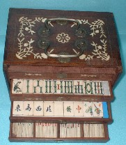
「一年四季」牌という名称は、花牌の字句に拠る。
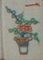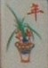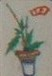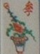
普通 前聯が「春夏秋冬」とくれば、後聯は「梅蘭竹菊」とくる。しかしこの牌は後聯が「一年四季」。この字句の組み合わせは他にもあるかも知れないが、とりあえずは初見。そこでこの名称とした。索子は太い孟宗竹に似ている。そこで孟宗竹タイプと呼ぶ。
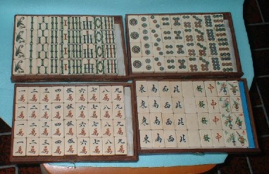
せっかくの孟宗竹も、これでは分かりにくいので索子だけドアップ。
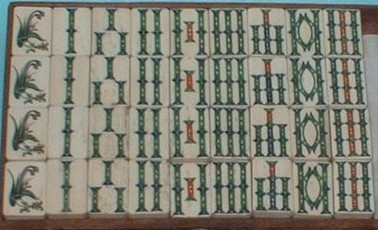
＃孟宗竹をネットでチェックしてみたら、名前の由来は、「昔の中国に孟宗という名の孝行息子がいた。真冬に老母が“タケノコを食べたい”と言い出した。そこで山へ行くと、この竹にタケノコが生えていた。そこで孟宗竹という名がついた」ということだった。ふ〜ん、そうだったのか。(・_・)
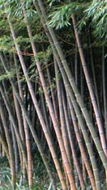 学名を Phyllostachys pubescens と云うそうな。
てな話はおいといて、この孟宗竹タイプ じつに迫力がある。牌が上等なので、箱も素晴らしい象嵌入り。
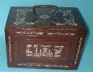 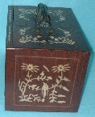
そんなわけで、孟宗竹タイプはσ(-_-)のお気に入り。もちろんこのタイプは、博物館にも収蔵されている。その代表的なのがロンドンで収集されたという天女散華牌。
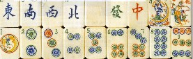
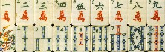
また かの有名な梅蘭芳の愛蔵牌の索子も、このタイプ。
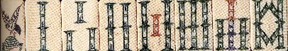
どれもこれも名品中の名品。このタイプは全般に1930年前後、上海辺りで製作されたと思われる。とうぜん麻雀祭都でも、前にココ（No.17）で紹介している。しかし孟宗竹タイプがσ(-_-)のお気に入りというだけで、再度 取り上げたわけではない。
No.17で紹介した牌にしても博物館の収蔵品にしても、ラインはすべて直線的に彫られている。しかしこの一年四季牌の８索だけ、内側の斜線が見事にウェーブしている。
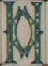
このようにみごとな曲線の孟宗竹８索は見たことがない。まさにグラマー美人のボデイラインを妄想させる。あ、“見るだけでは飽きたらず、毎日 なで回している”というのは根も葉もないウワサなので....（^-^；
|